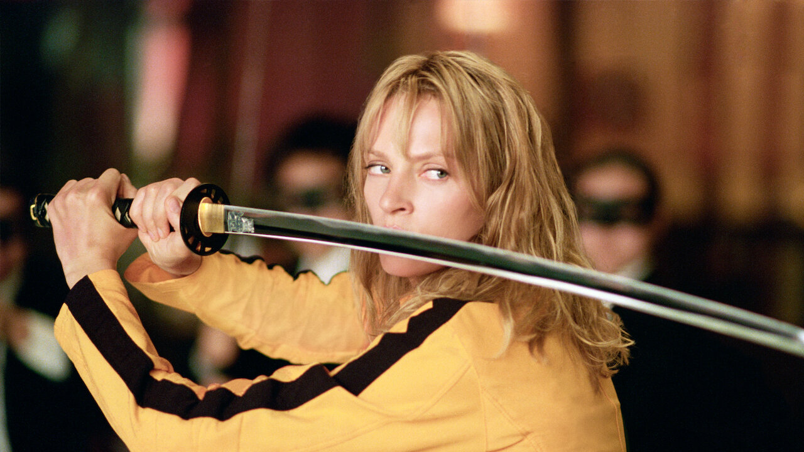

(2003)
Konusu
oyuncu hakkında bilgi için oyuncuya tıklayın.
Kill Bill, Quentin Tarantino tarafından yazılan ve yönetilen bir aksiyon filmidir. Film, eski bir suikastçi olan "The Bride" (Düğün Günü) olarak bilinen bir kadının intikam hikayesini anlatır. The Bride, eski patronu Bill ve onun suikastçi ekibi tarafından düğün gününde öldürülmeye çalışılır, ancak hayatta kalır ve dört yıl sonra intikam almak için geri döner. Film, dövüş sahneleri, stilize şiddet ve Tarantino'nun karakteristik diyaloglarıyla dikkat çeker.
Quentin Tarantino
Uma Karuna Thurman, Amerikalı bir oyuncu, yazar, yapımcı ve modeldir. Romantik komedilerden ve dramalardan bilim kurgu ve aksiyon filmlerine kadar çeşitli filmlerde rol almıştır. Aralık 1985 ve Mayıs 1986'da British Vogue'un kapaklarında yer almasının ardından, Thurman'ın çıkış yaptığı rol, başrol oynadığı Tehlikeli İlişkiler (1988) filmi oldu. Quentin Tarantino'nun 1994 yapımı Pulp Fiction filmindeki Mia Wallace rolüyle uluslararası üne kavuştu ve bu rolüyle En İyi Yardımcı Kadın Oyuncu dalında Akademi Ödülü, BAFTA Ödülü ve Altın Küre Ödülü'ne aday gösterildi. Sıklıkla Tarantino'nun ilham perisi olarak anılan Thurman, Kill Bill: 1. ve 2. ciltlerde (2003, 2004) Gelin rolünü canlandırarak yönetmenle yeniden bir araya geldi ve bu rolüyle iki Altın Küre Ödülü adaylığı daha kazandı.